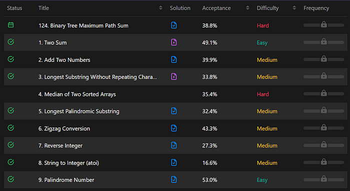
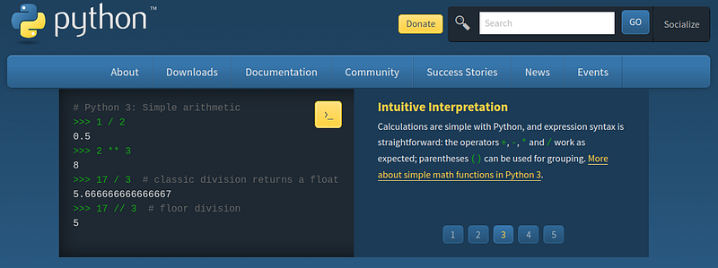
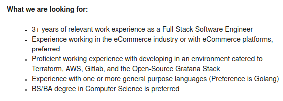
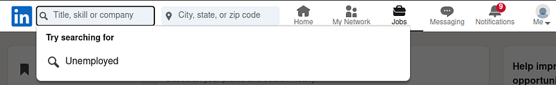
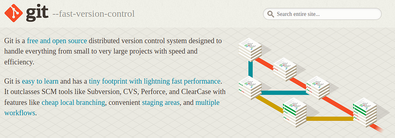

Learning programming is less like learning and more like practicing. There is a subconscious act to programming which must be trained.
It is only done by trial and error. There is no short way. Nothing-not even a lecture in Computer Science can spare you the need to implement trial and error through time.
Your goal for learning programming in college is to place everything in the classroom to working knowledge while learning to code.
This means following the practice of debugging error onto a solution.
The solution will not be the teacher but the debugging. As you trial and error you find what works and what does not work. Understanding programming is about knowing 50 ways not to do something and several ways to do something, then choosing the best option.
All programming problems work this way and the study of Computer Science is meant to speed up this process.
By knowing how a compiler works we easily know the solution in less trials. From our Computer Science courses, lecture after lecture, we learn the secrets of computing, shortening our need for trial and error.
Is this the end of trial and error? Do we just learn Computer Science and move on? No. There is no skipping trial and error. The daily debugging of code-it never ends.
You will come across technical problems-many life changing to solve. It is the only way we progress.
Preparing for work
Let's shift our focus a little bit. Why join a Computer Science program? To get a job, right? Yea we are here to make money.
We want work and we want it now. Okay, let's talk about that.
Why follow certifications first
Certifications can be worth more than the degree itself. Security+ is a requirement for most government jobs as is today. Self-taught developers often solely learn from studying for certifications.
The first and foremost certification I recommend for software engineering is Security+. Afterward a cloud certification-Azure certification or AWS Cloud Practitioner then AWS Architect.
After that the other important skill would be interviewing and LeetCode. Between LeetCode and certifications-certifications are more important.
After earning some of these certifications, at least Security+, I would start on LeetCode.
Then study LeetCode
This may seem backwards. Why get certifications first? Won't LeetCode make you more confident in interviews?
Yes, of course LeetCode will make you more confident. But what do you need more, confidence or more interviews? Sadly the job marketplace prioritizes accreditation(verified by a 3rd party) over how you state your skill set.
You can be the best interviewer in the world but you will never make it past the first round if you have no proof of your skills.
Many interviews won't even include a technical interview. It is purely questions about programming and Computer Science.
Heck, they don't even care about a degree. Certifications are valued higher than degrees. Too many people have faked or half-baked their degrees and burned their employees with under performance.

Employers no longer trust degrees yet they view certifications highly. Enough to ignore a bad whiteboarding (LeetCode) session and hire you anyway.
You will feel like an impostor
If you are a beginner in programming and you follow this advice:
- Work on Computer Science degree
- Follow certificate
- Learn LeetCode
- Practice programming/skillset
You are way more likely to get a job than someone who does this:
- Work on Computer Science degree
- Practice programming/skill set
- Learn LeetCode
- Follow certificate
Employers value accreditation over all things. Recruiters are not able to assess programming skills-they usually don't know that skill set. Senior engineers do not trust the statement "I have the skills" and they hear this phrase many times a day-"I am a passionate programmer".

There is no trust in these things anymore. Instead what they want to see is proof of skills directly by some third party.
If you have a college degree and certifications you fit what they are looking for despite not having the skill set.
When you finally do get the job-you will enter feeling like an impostor.
Sometimes impostor syndrome is just a lack of confidence but if you had not been building your skill set for years-it is based on lacking the true skill set needed for the job.
I have seen it. College graduates got Security+ while in college-while many others focused only their skillset-me included.
The Security+ people get the job-we skill set focused individuals do not. I get asked questions about AWS, lambdas, EC2 automation and Kubernetes. I help them setup their project and inform them about the difference between the services.
They tell me, "bro, I feel like such an impostor, I wish I worked on my skill set." I say, "you got the job though bro, good job man". It ends with, "I don't feel like I am doing anything, I don't know how".
And yup that is how it works. The employer didn't do a technical interview on him and this was past 2023-after the job market crash.
There are many skilled individuals out there
I am not the only one experiencing underemployment. We are over skilled yet underemployed. Yea, it does get me upset. But hey I am not alone. Several friends of mine, at least 4-6 of them are super skilled yet no one will hire them.
Years ago I idolized them as great programmers while starting out in college. I assumed they didn't want to work as a software engineer. Maybe they just like working in a restaurant?

I mean who doesn't want to work at an Apple Bees right?
What is funny-all of us do not have certificates. Two have degrees yet can't find work.
I have also seen both the skilled and unskilled in unethical behavior:
- Falsely placing bachelors
- Buying quick and easy Masters or PhDs
- Fibbing experience
- Using shell companies
- Using false salaries
And usually these are the ones that get the job. I had a recruiter explain to me how these things are so common. I felt him smiling as if I should do the same. By another person I had been advised to pretend my experience was paid.
This is the world we live in-the competition is so fierce people have resorted to these tactics. However, certifications you cannot fib. That is the point of certifications. They are 3rd party verified.
How to work on your skill set
Alright let's get back to my favorite subject-the skill set. When we are searching for work-the actual skill set will allow us to perform well at work. At one point or another we need to sit down and study the skills used in the work place.
There are two ways to do this. If you are still in college you can parallel your programming study. If you are graduated you can look on job descriptions and study the most common skill requirements.
Let's talk about both of these...
Parallel your programming study
I recommend studying whichever subject your class is in. Take the syllabus, the potential programming language and subject then find a Udemy course or book as similar and effective as possible to learn from.
If you are taking a penetration testing class then take a penetration testing course on Udemy. For Operating Systems take a course on C. If you are taking an intro to machine learning take a course on PyTorch, NumPy and pandas. Programming fundamentals? Follow the language of the class on Udemy.
You will be surprised how consistent learning Computer Science is across Udemy, learn programming sites and a university course. It is all the same knowledge. JavaScript is JavaScript, penetration testing is penetration testing.
I have found myself learning exactly the same things from my syllabus and Udemy courses often.
Look on job descriptions
This is my favorite thing to do. I love studying a skill set that most jobs require. For 4 months I studied AWS for 1 hour a day on top of my coding (this was before I started blogging).
I used a great Udemy course and Whiz Lab. Daily I would open up the AWS console, make my little Lambda and Dynamo project, watch the Udemy course and learn services one at a time.
The best part, when I read job descriptions I knew every single thing on it. Afterward I felt way more confident about applying and interviewing for jobs. Then I did the same thing to Kubernetes and Docker.
I studied those two for a while. And next React, Java Spring. In the end I was putting it all together in a scalable email service app like Convert Kit.
If you study this way-you will have the foundations for an entry level position. And you will not be an impostor.
Degree -> Certifications -> LeetCode -> Skill Set (follow job descriptions)
Find a way to use Git in teams
As an aside to being in college we can start or join team projects with Git and GitHub/GitLab. This can be team projects during a course. A video game, a tool, heck even console emulators.
You can't learn team work or how to follow code reviews on your own. Jobs will throw you into this and without a background in this you can get lost in all the automation. If you have never worked in a team-the learning curve can be brutal.
The ideal team would be an internship or entry software engineering job. Though life doesn't always work that way. Instead we find our own team and prepare our self.
FAQ
Why should I listen to you, you are not a software engineer?
True true. People are attracted to success and the outliers who made it. You will always find those who both made it and did not. I understand that.
What I am hoping to relay to you is a character about Computer Science. A love, a passion, a dedication. This is both motivational material and instructional.
I am a genuine person, trying to write and portray Computer Science in the most honest way I can interpret. I don't claim to be able to get you a job. Heck I deny it.
Even those that have a job can't guarantee you will, though they try. These are guru types similar to Tai Lopez in this respect those which claim 3 months from nothing to software engineer.
Trust me, these guys are not telling the truth. It takes years just to get decent.
Certifications cost $500+ per exam, is that worth it?
Yes, totally worth it. It should take a few months to prepare. You will make way more when you work. It is good to save up for it or ask family to pay for the certification test.
Try to study well and take a bunch of practice tests. Your goal should be to pass it the first time. Remember that is the standard entry certification.
Should I even work on my skill set?
Yes, in the end that is the crux of your performance as a software engineer. Getting the job is a lot of bureaucracy. Once you are past that it depends on your skill set and your skill set alone.
They may not even train you. You could end up training yourself on your own-on the job.
How do I learn LeetCode?
I am glad you asked. I created an entry guide to LeetCode some months back. Give it a read, I give you the best resources and tactics.
Do I need to learn cloud?
In the past we had cloud engineers and software engineers. Now we have the two in one. When you have both programming and cloud skills companies see it as saving money.
For enterprises cloud is more important then ever before. Not only is it good-these cloud providers have made it addictive.
A lot of teams use AWS, Azure and Google Cloud for production. Load balancers, API gateways, lambdas and scalable databases-they use all of it due to the developer experience and scaling services.
It is surprising how cloud is integral to our skills as software engineers today.
I created an introduction to cloud a few months back.
Anywho, I hope you learned something...
CTA: Check out my book on learning code
Happy coding!
Resources
Is a masters degree worth it: Degree Review: Masters of Computer Science
LeetCode: An In Depth Guide to Breaking the LeetCode Learning Curve
Cloud systems: How do cloud services work & what is a virtual machine?